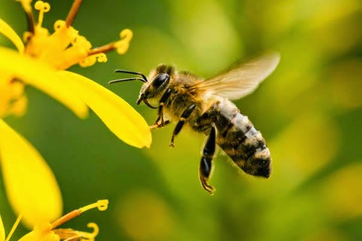
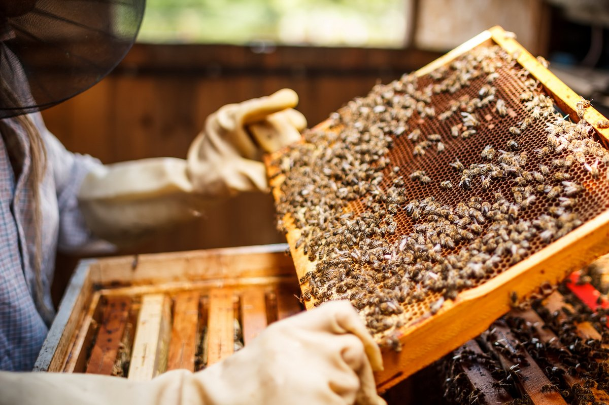
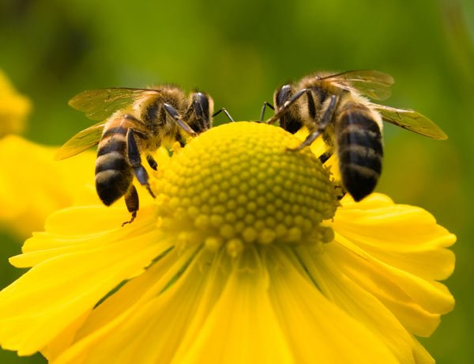

Основи бджільництва
- Бджоли – це комахи з шістьма ногами. Вони мають п’ять очей і дві пари крил, які під час польоту зчіплюються разом, утворюючи одну велику пару.
- Бджоли існують близько 30 мільйонів років, еволюціонуючи разом з квітковими рослинами.
- Бджоли переносять пилок на задніх лапках у пилковому кошику або корбікулі.
- Середній вулик може вмістити близько 50 000 бджіл.
- Бджоли мають важливе значення, оскільки вони запилюють приблизно 130 сільськогосподарських культур.
Життя і робота бджіл
- Одна бджола може виробити 6-8 г меду за все своє життя.
- Щоб зробити 1 кг меду, бджоли повинні зібрати нектар з близько 4 мільйонів квіток.
- Бджоли – напрочуд швидкі літуни. Бджоли можуть літати зі швидкістю до 19 км/год, і під час кожного польоту бджола відвідує 50-100 квіток, щоб зібрати нектар.
- Бджола може робити до 200 помахів крилами за секунду. Ці швидкі рухи крил і створюють звук дзижчання, який асоціюється у нас з бджолами.
- Бджоли обігрівають і охолоджують свій вулик, щоб підтримувати температуру між 33 і 35 градусами цілий рік. У холодну погоду бджоли зігрівають вулик, роячись разом, щоб генерувати тепло тіла, а також заклеюючи щілини у вулику прополісом. У теплу погоду вони збирають воду і нагнітають її, щоб випаровувати і охолоджувати вулик, створюючи своєрідну центральну систему кондиціонування.
Тривалість життя бджіл

Тривалість життя бджоли залежить від її ролі у вулику. Робочі бджоли, тобто самки, які виконують всю роботу у вулику, живуть близько 6 тижнів влітку. Однак вони можуть жити до 5 місяців, якщо народжуються наприкінці літа або на початку осені.
Матка, єдина бджола у вулику, яка відкладає яйця, може жити до 5 років. Трутні, або самці бджіл, мають найкоротшу тривалість життя, живучи лише близько 8 тижнів.
Бджоли мають унікальний зір, який дозволяє їм бачити ультрафіолетове світло, невидиме для людини. Ця здатність допомагає їм знаходити квіти для збору нектару. Вони також можуть бачити поляризоване світло, що допомагає їм у навігації.
Важливість бджіл
Бджоли неймовірно важливі для нашої екосистеми. Майже 90% дикорослих рослин і 75% провідних світових сільськогосподарських культур залежать від запилення тваринами.
Кожна третя порція нашої їжі залежить від запилювачів, таких як бджоли. Культури, які залежать від запилення, у п’ять разів цінніші, ніж ті, що не залежать.
Головна причина катастрофічної смертності бджіл – пестициди та інсектициди. Бджоли потребують захисту людства, бо є вразливими та зазнають значного знищення через забруднення навколишнього середовища. А людство значною мірою залежить від існування і щоденної праці цих маленьких істот. Відповідно до законодавства Німеччини, бджіл, джмелів та ос включили до категорії вимираючих видів. За вбивство однієї особи бджоли або оси накладається штраф, розмір якого визначається в кожному регіоні окремо, але може змінюватись в межах від 5 до 50 тисяч євро.
Бджоли – чарівні створіння, які відіграють вирішальну роль у нашій екосистемі. Їх важка праця забезпечує запилення рослин і виробництво меду. Бджоли – захоплюючі істоти з унікальними характеристиками та поведінкою. Поважні та улюблені комашки.
Детальніше тут